This is the full illustrated version of a teaching presentation prepared by Dr. Maninder Singh (GMCH Amritsar). Every slide is shown below with its text, so you can read it like an article — or download the original PowerPoint (.pptx) to teach from it. Topics covered include: Paediatric vs Adult Orthopaedics — Key Differences; Salter-Harris Classification — Growth Plate Injuries; DDH — Diagnosis by Age & Imaging; DDH Treatment Algorithm; SCFE — Classification, Imaging & Management; Perthes Disease — Classification & Management; Supracondylar Humerus Fracture — Paediatric Emergency.
Contents — jump to a slide (21)
- PAEDIATRIC
- Paediatric vs Adult Orthopaedics — Key Differences
- Salter-Harris Classification — Growth Plate Injuries
- DDH — Diagnosis by Age & Imaging
- DDH Treatment Algorithm
- SCFE — Classification, Imaging & Management
- Perthes Disease — Classification & Management
- Supracondylar Humerus Fracture — Paediatric Emergency
- Common Paediatric Fractures — Summary Table
- Non-Accidental Injury (NAI) — Recognition & Action
- Clubfoot (CTEV) — Ponseti Method Detail
- Septic Arthritis — Kocher Criteria & Management
- Acute Haematogenous Osteomyelitis — Diagnosis & Treatment
- Paediatric Bone Tumours — Recognition & Referral
- Normal Development — Gait & Lower Limb Alignment
- Ponseti Method Outcomes — Evidence Base
- Cerebral Palsy — Orthopaedic Considerations
- CASE STUDY 1 — Unstable SCFE (Emergency)
- CASE STUDY 2 — NAI / Safeguarding Alert
- Paediatric Orthopaedics — Quick Reference Summary
- CONCLUSIONS
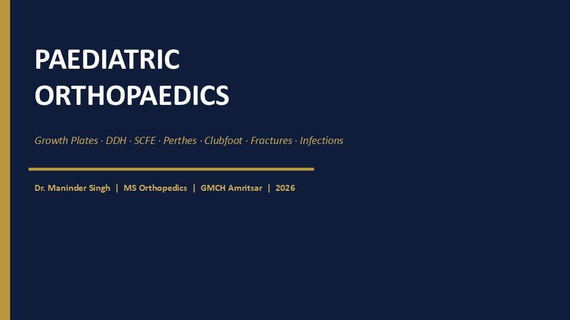
PAEDIATRIC
- Growth Plates · DDH · SCFE · Perthes · Clubfoot · Fractures · Infections
- Dr. Maninder Singh | MS Orthopedics | GMCH Amritsar | 2026
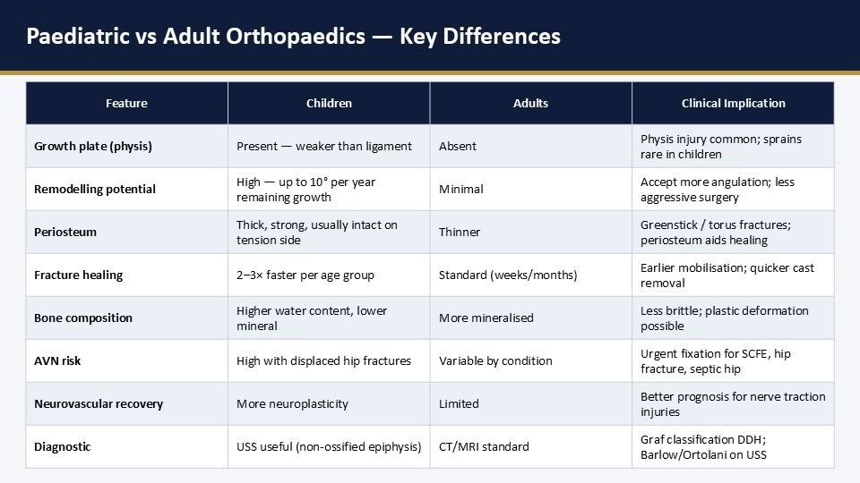
Paediatric vs Adult Orthopaedics — Key Differences
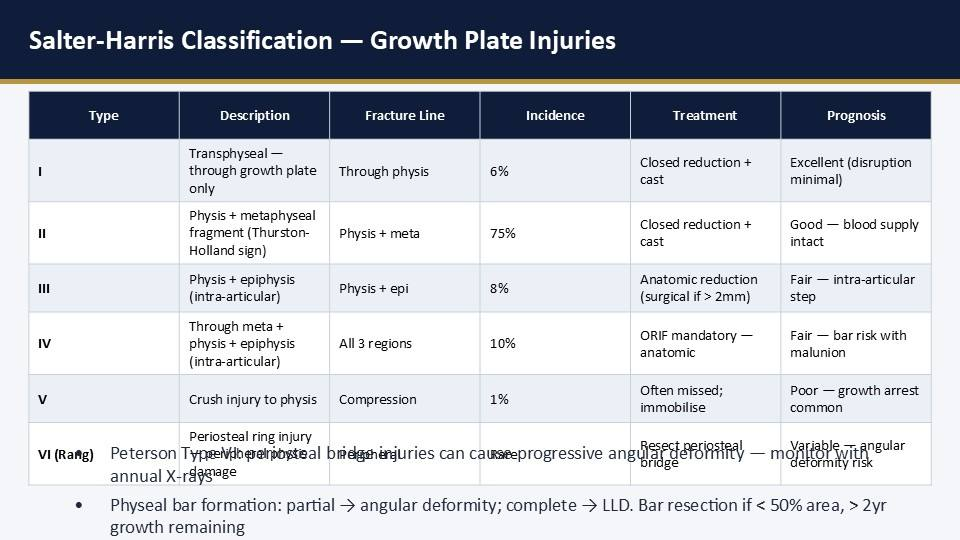
Salter-Harris Classification — Growth Plate Injuries
- Peterson Type VI: periosteal bridge injuries can cause progressive angular deformity — monitor with annual X-rays
- Physeal bar formation: partial → angular deformity; complete → LLD. Bar resection if < 50% area, > 2yr growth remaining
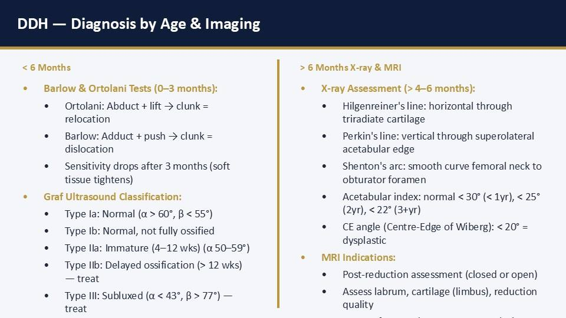
DDH — Diagnosis by Age & Imaging
- < 6 Months
- Barlow & Ortolani Tests (0–3 months):
- Ortolani: Abduct + lift → clunk = relocation
- Barlow: Adduct + push → clunk = dislocation
- Sensitivity drops after 3 months (soft tissue tightens)
- Graf Ultrasound Classification:
- Type Ia: Normal (α > 60°, β < 55°)
- Type Ib: Normal, not fully ossified
- Type IIa: Immature (4–12 wks) (α 50–59°)
- Type IIb: Delayed ossification (> 12 wks) — treat
- Type III: Subluxed (α < 43°, β > 77°) — treat
- Type IV: Dislocated — urgent treatment
- > 6 Months X-ray & MRI
- X-ray Assessment (> 4–6 months):
- Hilgenreiner's line: horizontal through triradiate cartilage
- Perkin's line: vertical through superolateral acetabular edge
- Shenton's arc: smooth curve femoral neck to obturator foramen
- Acetabular index: normal < 30° (< 1yr), < 25° (2yr), < 22° (3+yr)
- CE angle (Centre-Edge of Wiberg): < 20° = dysplastic
- MRI Indications:
- Post-reduction assessment (closed or open)
- Assess labrum, cartilage (limbus), reduction quality
- 3D MRI for complex cases, pre-surgical planning
- CT: post-ORIF implant check (brief study, radiation minimised)
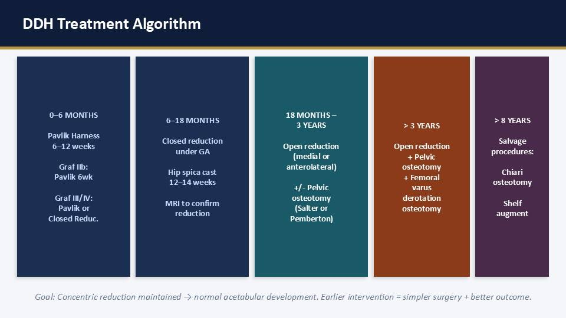
DDH Treatment Algorithm
- 0–6 MONTHS
- Pavlik Harness
- 6–12 weeks
- Graf IIb:
- Pavlik 6wk
- Graf III/IV:
- Pavlik or
- Closed Reduc.
- 6–18 MONTHS
- Closed reduction
- under GA
- Hip spica cast
- 12–14 weeks
- MRI to confirm
- reduction
- 18 MONTHS –
- 3 YEARS
- Open reduction
- (medial or
- anterolateral)
- +/- Pelvic
- osteotomy
- (Salter or
- Pemberton)
- > 3 YEARS
- Open reduction
- + Pelvic
- osteotomy
- + Femoral
- varus
- derotation
- osteotomy
- > 8 YEARS
- Salvage
- procedures:
- Chiari
- osteotomy
- Shelf
- augment
- Goal: Concentric reduction maintained → normal acetabular development. Earlier intervention = simpler surgery + better outcome.
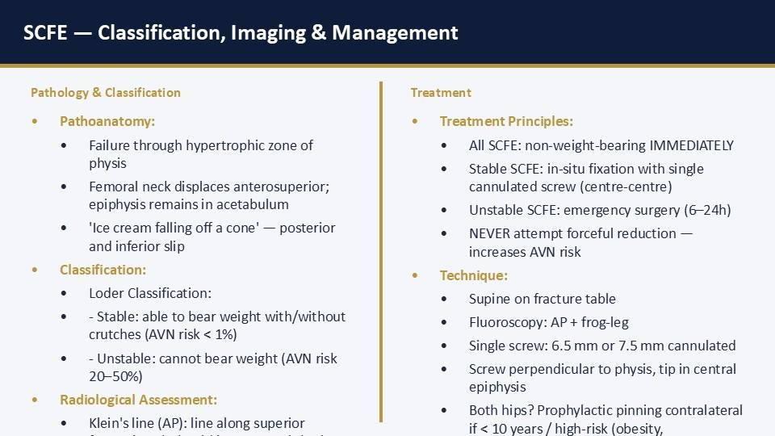
SCFE — Classification, Imaging & Management
- Pathology & Classification
- Pathoanatomy:
- Failure through hypertrophic zone of physis
- Femoral neck displaces anterosuperior; epiphysis remains in acetabulum
- 'Ice cream falling off a cone' — posterior and inferior slip
- Classification:
- Loder Classification:
- - Stable: able to bear weight with/without crutches (AVN risk < 1%)
- - Unstable: cannot bear weight (AVN risk 20–50%)
- Radiological Assessment:
- Klein's line (AP): line along superior femoral neck should intersect epiphysis
- Slippage angle (Southwick): lateral view — severity
- Grade I < 30°; Grade II 30–60°; Grade III > 60°
- Treatment
- Treatment Principles:
- All SCFE: non-weight-bearing IMMEDIATELY
- Stable SCFE: in-situ fixation with single cannulated screw (centre-centre)
- Unstable SCFE: emergency surgery (6–24h)
- NEVER attempt forceful reduction — increases AVN risk
- Technique:
- Supine on fracture table
- Fluoroscopy: AP + frog-leg
- Single screw: 6.5 mm or 7.5 mm cannulated
- Screw perpendicular to physis, tip in central epiphysis
- Both hips? Prophylactic pinning contralateral if < 10 years / high-risk (obesity, endocrinopathy)
- Monitor for avascular necrosis: MRI at 3 months if unstable
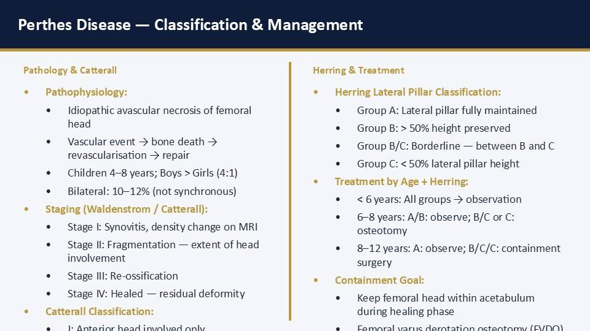
Perthes Disease — Classification & Management
- Pathology & Catterall
- Pathophysiology:
- Idiopathic avascular necrosis of femoral head
- Vascular event → bone death → revascularisation → repair
- Children 4–8 years; Boys > Girls (4:1)
- Bilateral: 10–12% (not synchronous)
- Staging (Waldenstrom / Catterall):
- Stage I: Synovitis, density change on MRI
- Stage II: Fragmentation — extent of head involvement
- Stage III: Re-ossification
- Stage IV: Healed — residual deformity
- Catterall Classification:
- I: Anterior head involved only
- II: Anterior 50% + lateral pillar spared
- III: 75% involvement, partial lateral pillar
- IV: Entire head involved
- Herring & Treatment
- Herring Lateral Pillar Classification:
- Group A: Lateral pillar fully maintained
- Group B: > 50% height preserved
- Group B/C: Borderline — between B and C
- Group C: < 50% lateral pillar height
- Treatment by Age + Herring:
- < 6 years: All groups → observation
- 6–8 years: A/B: observe; B/C or C: osteotomy
- 8–12 years: A: observe; B/C/C: containment surgery
- Containment Goal:
- Keep femoral head within acetabulum during healing phase
- Femoral varus derotation osteotomy (FVDO)
- Salter pelvic osteotomy — 'shelf' osteotomy
- Abduction brace (Petrie cast): limited compliance
- Prognostic Factor:
- Younger age + Group A: excellent outcome
- Older + Group C: residual deformity, early OA
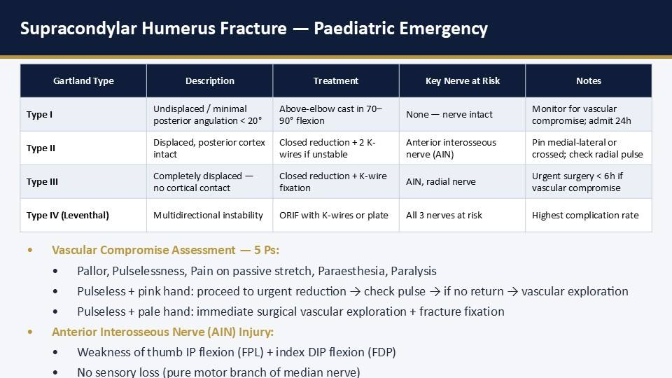
Supracondylar Humerus Fracture — Paediatric Emergency
- Vascular Compromise Assessment — 5 Ps:
- Pallor, Pulselessness, Pain on passive stretch, Paraesthesia, Paralysis
- Pulseless + pink hand: proceed to urgent reduction → check pulse → if no return → vascular exploration
- Pulseless + pale hand: immediate surgical vascular exploration + fracture fixation
- Anterior Interosseous Nerve (AIN) Injury:
- Weakness of thumb IP flexion (FPL) + index DIP flexion (FDP)
- No sensory loss (pure motor branch of median nerve)
- 95% recover spontaneously by 3 months — observe; EMG at 3 months if no recovery
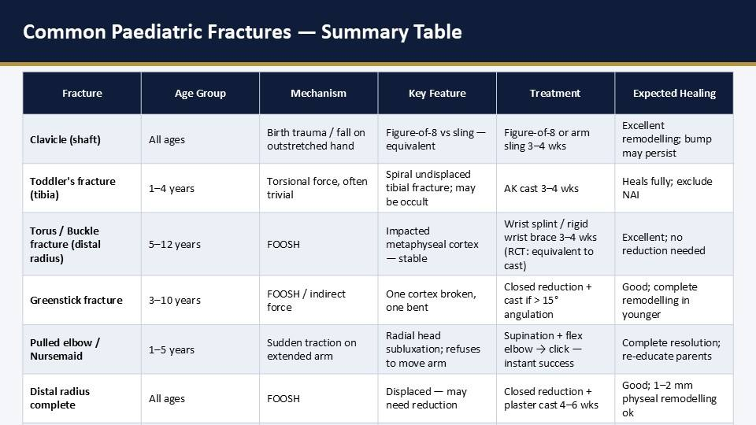
Common Paediatric Fractures — Summary Table
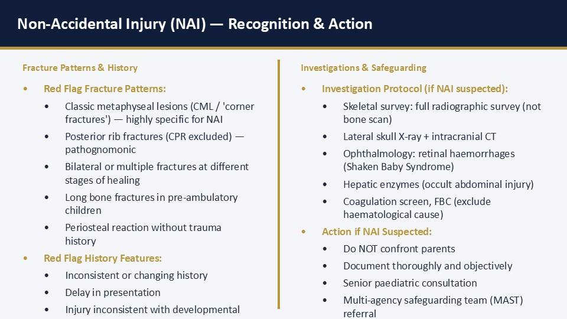
Non-Accidental Injury (NAI) — Recognition & Action
- Fracture Patterns & History
- Red Flag Fracture Patterns:
- Classic metaphyseal lesions (CML / 'corner fractures') — highly specific for NAI
- Posterior rib fractures (CPR excluded) — pathognomonic
- Bilateral or multiple fractures at different stages of healing
- Long bone fractures in pre-ambulatory children
- Periosteal reaction without trauma history
- Red Flag History Features:
- Inconsistent or changing history
- Delay in presentation
- Injury inconsistent with developmental stage
- History of previous unexplained injuries
- Investigations & Safeguarding
- Investigation Protocol (if NAI suspected):
- Skeletal survey: full radiographic survey (not bone scan)
- Lateral skull X-ray + intracranial CT
- Ophthalmology: retinal haemorrhages (Shaken Baby Syndrome)
- Hepatic enzymes (occult abdominal injury)
- Coagulation screen, FBC (exclude haematological cause)
- Action if NAI Suspected:
- Do NOT confront parents
- Document thoroughly and objectively
- Senior paediatric consultation
- Multi-agency safeguarding team (MAST) referral
- Police referral if immediate risk
- Child must not be discharged until safeguarding plan in place
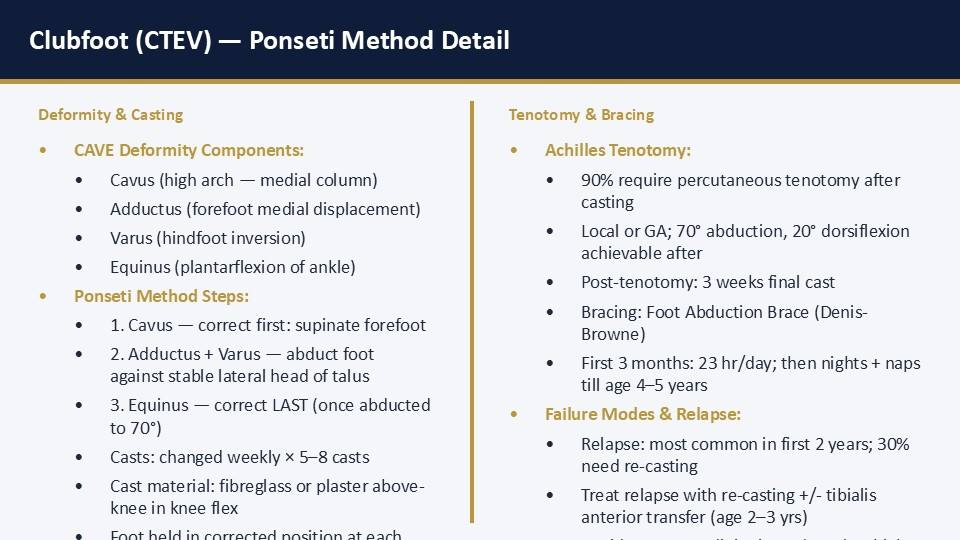
Clubfoot (CTEV) — Ponseti Method Detail
- Deformity & Casting
- CAVE Deformity Components:
- Cavus (high arch — medial column)
- Adductus (forefoot medial displacement)
- Varus (hindfoot inversion)
- Equinus (plantarflexion of ankle)
- Ponseti Method Steps:
- 1. Cavus — correct first: supinate forefoot
- 2. Adductus + Varus — abduct foot against stable lateral head of talus
- 3. Equinus — correct LAST (once abducted to 70°)
- Casts: changed weekly × 5–8 casts
- Cast material: fibreglass or plaster above-knee in knee flex
- Foot held in corrected position at each stage
- Tenotomy & Bracing
- Achilles Tenotomy:
- 90% require percutaneous tenotomy after casting
- Local or GA; 70° abduction, 20° dorsiflexion achievable after
- Post-tenotomy: 3 weeks final cast
- Bracing: Foot Abduction Brace (Denis-Browne)
- First 3 months: 23 hr/day; then nights + naps till age 4–5 years
- Failure Modes & Relapse:
- Relapse: most common in first 2 years; 30% need re-casting
- Treat relapse with re-casting +/- tibialis anterior transfer (age 2–3 yrs)
- Avoid posteromedial release (PMR) — high recurrence, stiff scarred foot
- Pirani score: monitors correction (0 = fully corrected)
- French Functional Method: alternative physio-based approach
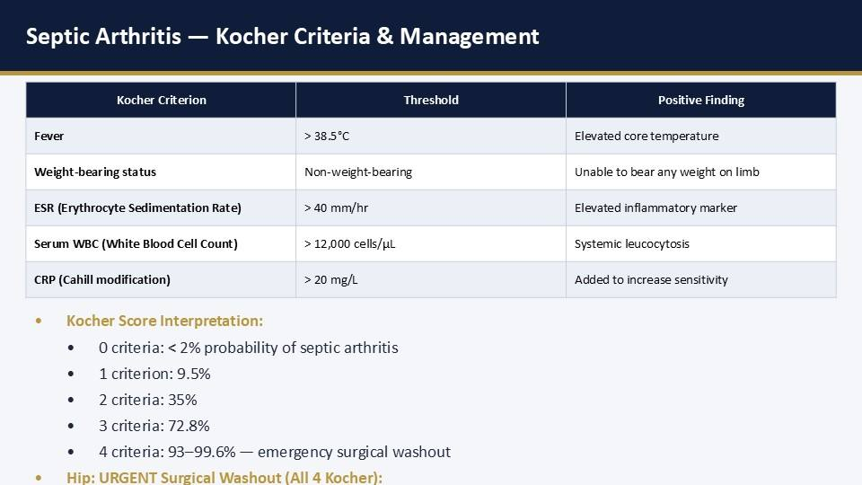
Septic Arthritis — Kocher Criteria & Management
- Kocher Score Interpretation:
- 0 criteria: < 2% probability of septic arthritis
- 1 criterion: 9.5%
- 2 criteria: 35%
- 3 criteria: 72.8%
- 4 criteria: 93–99.6% — emergency surgical washout
- Hip: URGENT Surgical Washout (All 4 Kocher):
- Capsular pressure → AVN if not decompressed within hours
- Anterior approach (Smith-Petersen) or posterior (Gibson)
- Send synovial fluid: Gram stain, C&S, cell count
- IV antibiotics: Flucloxacillin (Staph) + Gentamicin (Gram neg) — adjust on culture
- Continue IV until CRP normalising; total course 3–6 weeks
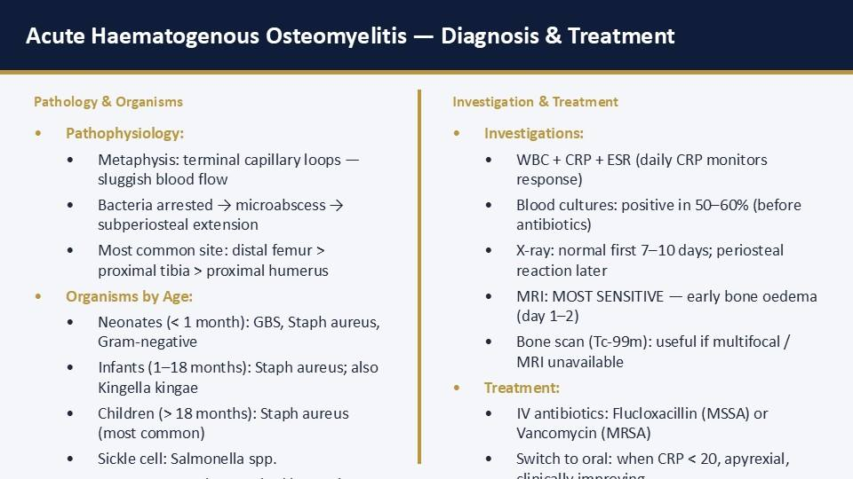
Acute Haematogenous Osteomyelitis — Diagnosis & Treatment
- Pathology & Organisms
- Pathophysiology:
- Metaphysis: terminal capillary loops — sluggish blood flow
- Bacteria arrested → microabscess → subperiosteal extension
- Most common site: distal femur > proximal tibia > proximal humerus
- Organisms by Age:
- Neonates (< 1 month): GBS, Staph aureus, Gram-negative
- Infants (1–18 months): Staph aureus; also Kingella kingae
- Children (> 18 months): Staph aureus (most common)
- Sickle cell: Salmonella spp.
- MRSA: community-acquired increasing (PVL toxin)
- Investigation & Treatment
- Investigations:
- WBC + CRP + ESR (daily CRP monitors response)
- Blood cultures: positive in 50–60% (before antibiotics)
- X-ray: normal first 7–10 days; periosteal reaction later
- MRI: MOST SENSITIVE — early bone oedema (day 1–2)
- Bone scan (Tc-99m): useful if multifocal / MRI unavailable
- Treatment:
- IV antibiotics: Flucloxacillin (MSSA) or Vancomycin (MRSA)
- Switch to oral: when CRP < 20, apyrexial, clinically improving
- Total antibiotic duration: 3 weeks (uncomplicated)
- Surgical drainage: if subperiosteal abscess, no response 48h
- Chronic OM: Garre sclerosing, Brodie abscess — sequestrectomy + saucerisation
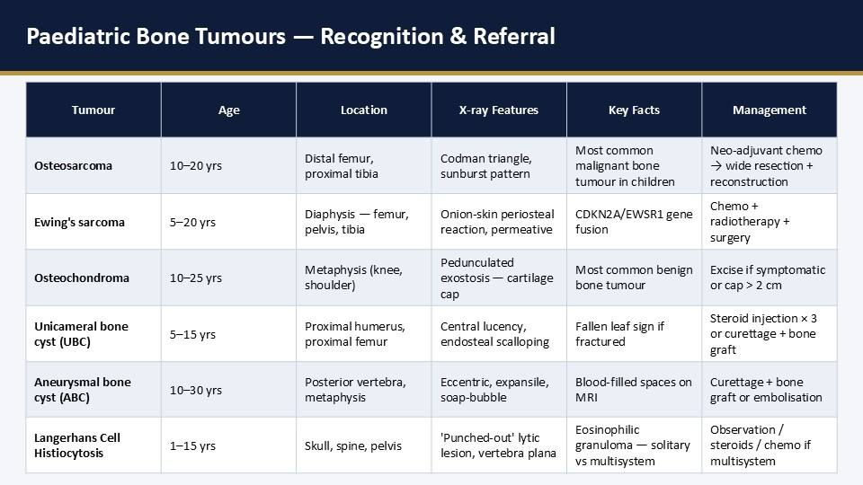
Paediatric Bone Tumours — Recognition & Referral
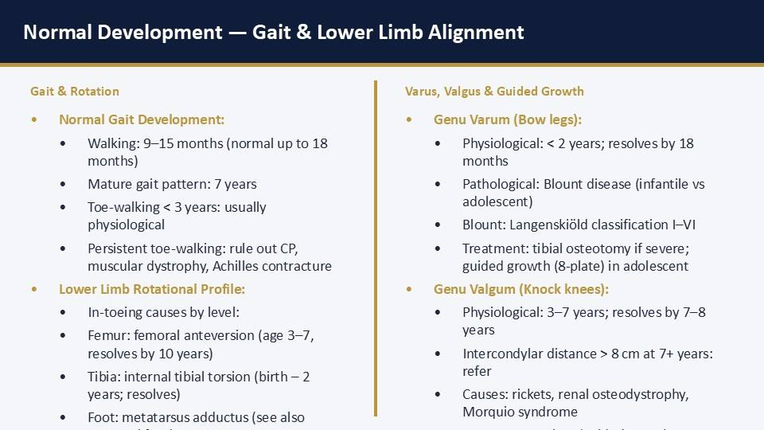
Normal Development — Gait & Lower Limb Alignment
- Gait & Rotation
- Normal Gait Development:
- Walking: 9–15 months (normal up to 18 months)
- Mature gait pattern: 7 years
- Toe-walking < 3 years: usually physiological
- Persistent toe-walking: rule out CP, muscular dystrophy, Achilles contracture
- Lower Limb Rotational Profile:
- In-toeing causes by level:
- Femur: femoral anteversion (age 3–7, resolves by 10 years)
- Tibia: internal tibial torsion (birth – 2 years; resolves)
- Foot: metatarsus adductus (see also neonatal foot)
- Out-toeing: usually femoral retroversion; normal variant up to age 8
- Varus, Valgus & Guided Growth
- Genu Varum (Bow legs):
- Physiological: < 2 years; resolves by 18 months
- Pathological: Blount disease (infantile vs adolescent)
- Blount: Langenskiöld classification I–VI
- Treatment: tibial osteotomy if severe; guided growth (8-plate) in adolescent
- Genu Valgum (Knock knees):
- Physiological: 3–7 years; resolves by 7–8 years
- Intercondylar distance > 8 cm at 7+ years: refer
- Causes: rickets, renal osteodystrophy, Morquio syndrome
- Treatment: 8-plate (guided growth, reversible) or osteotomy
- LLD > 2 cm: epiphysiodesis contralateral limb
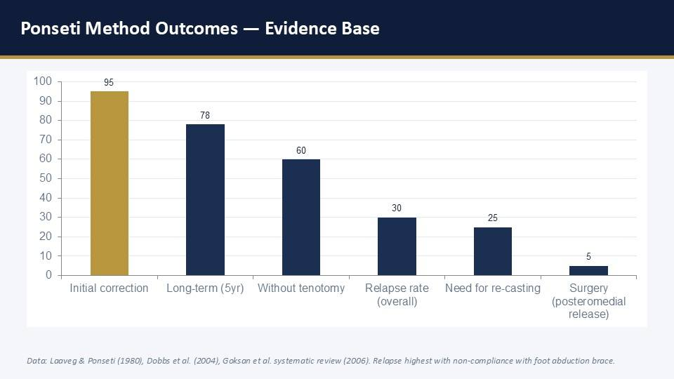
Ponseti Method Outcomes — Evidence Base
Data: Laaveg & Ponseti (1980), Dobbs et al. (2004), Goksan et al. systematic review (2006). Relapse highest with non-compliance with foot abduction brace.
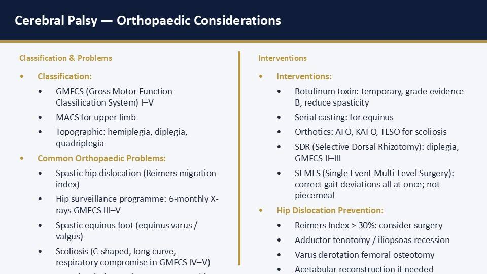
Cerebral Palsy — Orthopaedic Considerations
- Classification & Problems
- Classification:
- GMFCS (Gross Motor Function Classification System) I–V
- MACS for upper limb
- Topographic: hemiplegia, diplegia, quadriplegia
- Common Orthopaedic Problems:
- Spastic hip dislocation (Reimers migration index)
- Hip surveillance programme: 6-monthly X-rays GMFCS III–V
- Spastic equinus foot (equinus varus / valgus)
- Scoliosis (C-shaped, long curve, respiratory compromise in GMFCS IV–V)
- Crouch gait: hamstring contracture + hip flexion deformity
- Interventions
- Interventions:
- Botulinum toxin: temporary, grade evidence B, reduce spasticity
- Serial casting: for equinus
- Orthotics: AFO, KAFO, TLSO for scoliosis
- SDR (Selective Dorsal Rhizotomy): diplegia, GMFCS II–III
- SEMLS (Single Event Multi-Level Surgery): correct gait deviations all at once; not piecemeal
- Hip Dislocation Prevention:
- Reimers Index > 30%: consider surgery
- Adductor tenotomy / iliopsoas recession
- Varus derotation femoral osteotomy
- Acetabular reconstruction if needed
- Goal: maintain seated stability and pain-free range
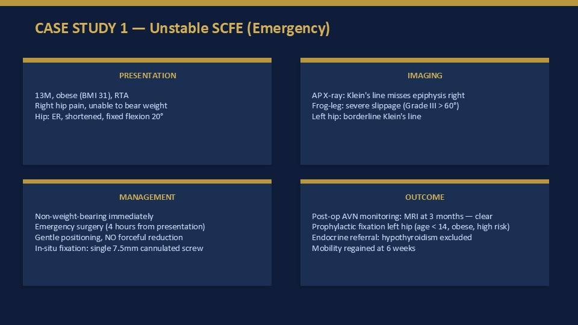
CASE STUDY 1 — Unstable SCFE (Emergency)
- PRESENTATION
- 13M, obese (BMI 31), RTA
- Right hip pain, unable to bear weight
- Hip: ER, shortened, fixed flexion 20°
- IMAGING
- AP X-ray: Klein's line misses epiphysis right
- Frog-leg: severe slippage (Grade III > 60°)
- Left hip: borderline Klein's line
- MANAGEMENT
- Non-weight-bearing immediately
- Emergency surgery (4 hours from presentation)
- Gentle positioning, NO forceful reduction
- In-situ fixation: single 7.5mm cannulated screw
- OUTCOME
- Post-op AVN monitoring: MRI at 3 months — clear
- Prophylactic fixation left hip (age < 14, obese, high risk)
- Endocrine referral: hypothyroidism excluded
- Mobility regained at 6 weeks
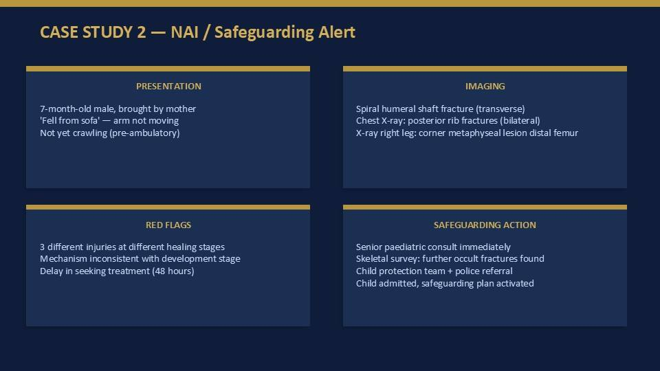
CASE STUDY 2 — NAI / Safeguarding Alert
- PRESENTATION
- 7-month-old male, brought by mother
- 'Fell from sofa' — arm not moving
- Not yet crawling (pre-ambulatory)
- IMAGING
- Spiral humeral shaft fracture (transverse)
- Chest X-ray: posterior rib fractures (bilateral)
- X-ray right leg: corner metaphyseal lesion distal femur
- RED FLAGS
- 3 different injuries at different healing stages
- Mechanism inconsistent with development stage
- Delay in seeking treatment (48 hours)
- SAFEGUARDING ACTION
- Senior paediatric consult immediately
- Skeletal survey: further occult fractures found
- Child protection team + police referral
- Child admitted, safeguarding plan activated
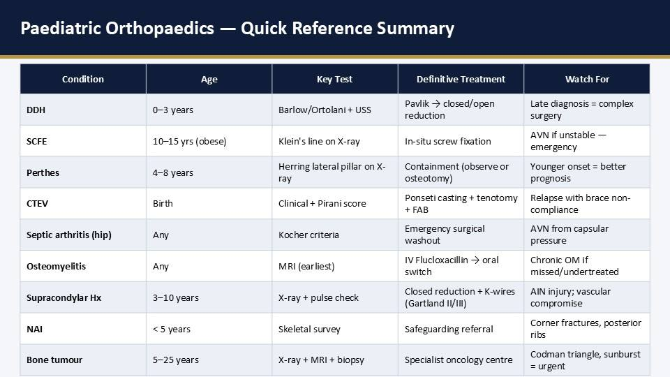
Paediatric Orthopaedics — Quick Reference Summary
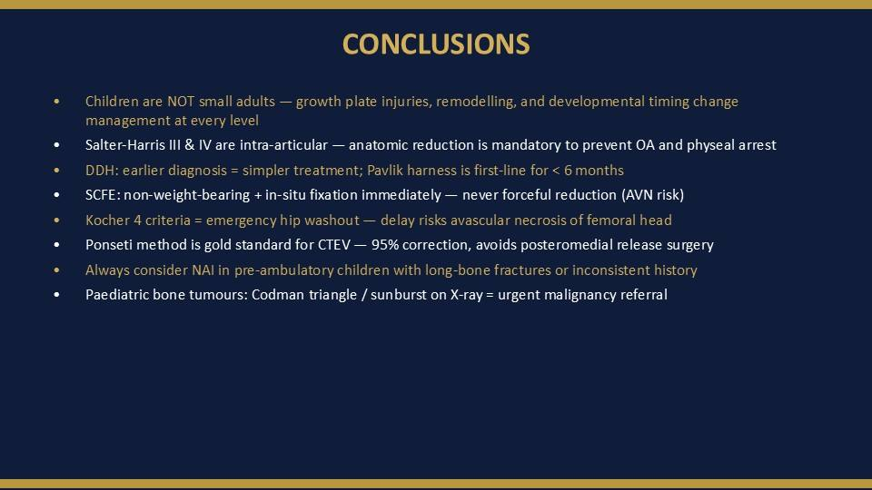
CONCLUSIONS
- Children are NOT small adults — growth plate injuries, remodelling, and developmental timing change management at every level
- Salter-Harris III & IV are intra-articular — anatomic reduction is mandatory to prevent OA and physeal arrest
- DDH: earlier diagnosis = simpler treatment; Pavlik harness is first-line for < 6 months
- SCFE: non-weight-bearing + in-situ fixation immediately — never forceful reduction (AVN risk)
- Kocher 4 criteria = emergency hip washout — delay risks avascular necrosis of femoral head
- Ponseti method is gold standard for CTEV — 95% correction, avoids posteromedial release surgery
- Always consider NAI in pre-ambulatory children with long-bone fractures or inconsistent history
- Paediatric bone tumours: Codman triangle / sunburst on X-ray = urgent malignancy referral
Use this deck in your teaching
The original editable PowerPoint is free to download for non-commercial teaching, with credit to the author. Questions or corrections? Contact us.
About this deck
Prepared by Dr. Maninder Singh (MS Orthopaedics, Associate Professor, GMCH Amritsar) for postgraduate and clinical teaching. Where images are from open-licence sources (for example Wikimedia Commons), the licence and author appear on the slide. See our editorial policy. Educational use only — not medical advice; see Terms & Medical Disclaimer.